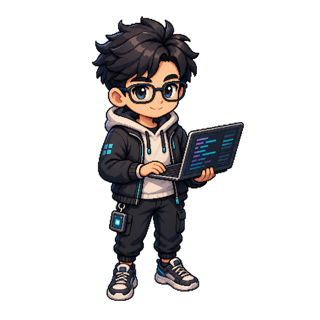
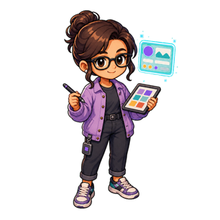
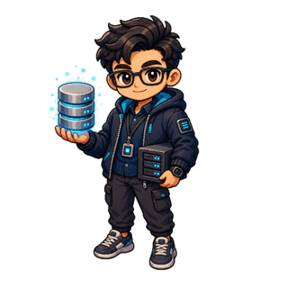
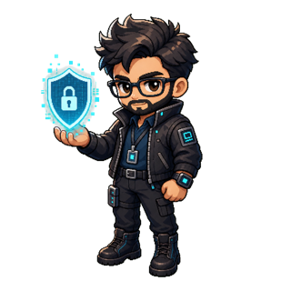
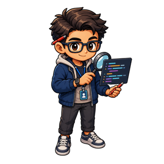
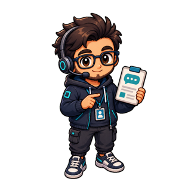

OctiqFlow runs real terminals inside its window and turns one-click UI actions into keystrokes your agent reads as if you typed them.
There is no fragile automation layer. A UI action writes raw bytes to a real pseudo-terminal (PTY). The shell and the agent read those bytes as if they came from your keyboard.
A button calls invoke("pty_write", { id, data }) in the web UI.
The Rust backend writes those bytes to the PTY's stdin — real input.
Output streams as pty-output events and paints in the terminal.
Many terminals per project, a file browser, a git diff viewer, attention alerts, a live canvas, and agent-session resume — all native, all offline.
Group folders into a project, then open as many live terminals as you need. Each keeps its scrollback in memory when hidden.
project sidebar · tabsLaunch an agent, inject a prompt onto the line, or inject and submit — from labelled buttons instead of retyping commands.
launch · inject · inject + enterStatus counts, changed files, and full file diffs read from one git backend, so the sidebar, dashboard, and diff panel always agree. Unpushed commits show ↑N.
OctiqFlow scans terminal output for notify escape codes. When an agent needs you, its tab badges and a banner appears. Click to jump straight there.
OSC 9 / 777 / Kitty · octiq-notifyRestart the app and re-attach a tab to its prior agent session — claude --resume / codex resume. A best-effort hook captures the session id while it runs.
A pane beside the terminal renders HTML or Markdown the agent writes — a plan, a diagram, a decision log — and updates it live as you talk.
sandboxed iframe · highlight to askA dot lights on a tab only while its agent is actively streaming output, so you can see at a glance which terminal is busy.
per-tab busy stateEach project's tab list and scrollback are saved, so terminals rebuild after a restart with your old output written in above a fresh prompt.
per-project · on diskA dashboard with project widgets, plus reusable agent-launch prompt templates that are not tied to any one project.
prompt templates · widgetsWhile you talk with the agent in a terminal, it draws a plan, a spec, or a diagram onto a pane beside it — and keeps rewriting the same document as decisions land. No IPC socket; just a file on disk and a watcher.
OctiqFlow ships role art for the agents you coordinate — an architect, a frontend dev, a QA, a DBA, a security reviewer, and more — so each terminal has a face.






A Tauri shell, a Rust backend, and a no-bundler web UI rendering terminals on the GPU.
One cross-platform desktop app for macOS, Windows, and Linux — small, native, no Electron.
Multi-PTY manager, git reads, file browser, layout store, and the OSC attention scanner.
Vendored, no CDN. WebGL rendering avoids the ghosted glyphs the DOM renderer leaves after reflow.
No bundler, no framework. Modules talk through window events; the whole UI runs straight from disk.
OctiqFlow builds from source with the Tauri toolchain. Rust, Node, and pnpm are the only requirements.
# 1 — clone the repo git clone https://github.com/kyson8101/octiq-flow.git cd octiq-flow # 2 — install the Tauri CLI (the only JS dependency) pnpm install # 3 — run the dev window with hot reload pnpm tauri dev # …or build the release .app / installer pnpm tauri build
Powers the PTY bridge and every backend command. Install via rustup or Homebrew.
Only used to fetch and run the Tauri CLI — the web UI itself ships with no build step.
Have claude or codex on your PATH — OctiqFlow launches them in a login shell.
Three coordinated agent paths around one hub — that is the mark, and that is the workflow. Bring your CLI agents into one calm window.